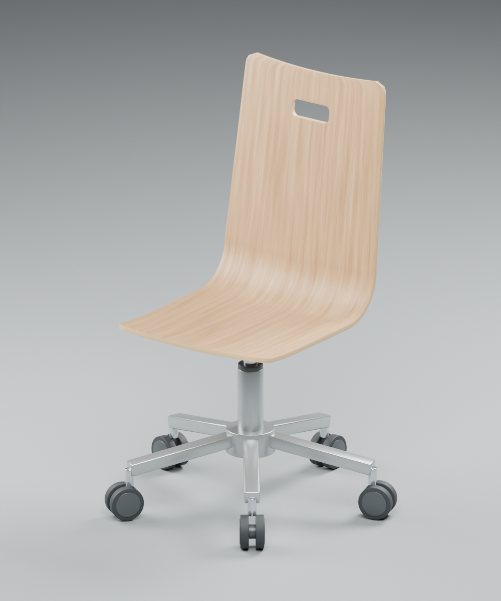

Studie dřevěné židle
Jeden tvar.
Každý úhel.
Plynulá křivka překližky, kovová podnož a pět párů koleček. Prozkoumejte známý předmět v novém rozměru.
Dřevo & kovDigitální model podle fotografie
01 — Prostorová studie 2026
Interaktivní 3DNačítání modelu…

Tažením otáčejte · kolečkem nebo dvěma prsty přibližujte
3D model se nepodařilo zobrazit. Prohlédněte si render nebo si níže stáhněte model.

Anatomie objektu
Jednoduchost
v detailech.
Rekonstrukce podle jedné fotografie. Rozměry jsou orientační a odpovídají vytvořenému modelu.
01 / Skořepina
Souvislá křivka
Sedák plynule přechází ve vysoké opěradlo. Kresbu dřeva doplňuje vrstvená hrana a otvor pro uchopení.
45 cm / šířka sedáku
02 / Konstrukce
Lehkost kovu
Středový sloupek s chromovaným pístem propojuje dřevěnou skořepinu s pěti rameny podnože.
48 cm / výška sedáku
03 / Pohyb
Pět opěrných bodů
Každé rameno zakončuje dvojité kolečko. Jednotlivé díly zůstávají v Blenderu samostatně upravitelné.
106 cm / celková výška
Pokračujte v tvorbě
Vezměte si model s sebou.
Otevřete scénu v Blenderu nebo použijte univerzální 3D model.